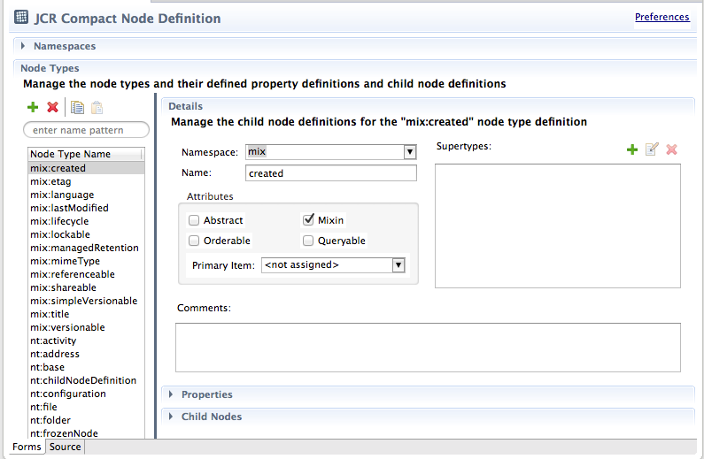

|
|
ModeShape Tools - CND Editor |
The CND Editor is used to create and modify a JCR compact node type definition. The CND editor opens and saves *.cnd
files. A CND contains zero or more namespace mappings and/or zero or more node type definitions. The CND editor is a multi-page
editor with a form-based page and a read-only text page.
Here is what the CND Editor's form page looks like:
The editor consists of the following:
| Header Section | shows validation error messages and a link to the CND preference page |
| Namespaces | a table with all the namespace mappings contained in the CND |
| Node Types | a table with all the node type definitions contained in the CND |
| Properties | a table with all the property definitions for the selected node type definition |
| Child Nodes | a table with all the child node definitions for the selected node type definition |
| Details Section | |
| Namespace | the namespace prefix of the selected node type definition |
| Name | the JCR name of the selected node type definition |
| Abstract Attribute | indicates if the selected node type definition cannot be instantiated |
| Mixin Attribute | indicates if the selected node type definition is a mixin |
| Orderable Attribute | indicates if nodes of the selected node type definition can be ordered |
| Queryable Attribute | indicates if nodes of the selected node type definition can be queried |
| Primary Item Attribute | the primary item of the selected node type definition (either a property definition, child node definition, or empty) |
| Supertypes | zero or more supertypes of the selected node type definition (defaults to nt:base if empty) |
| Comments | additional information about the selected node type definition that is saved to the file |
The CND editor only allows saving when information has changed. The settings in the preference page determine the verbosity of the CND notation that is saved to the file.